兵庫県
Hyogo Prefecture
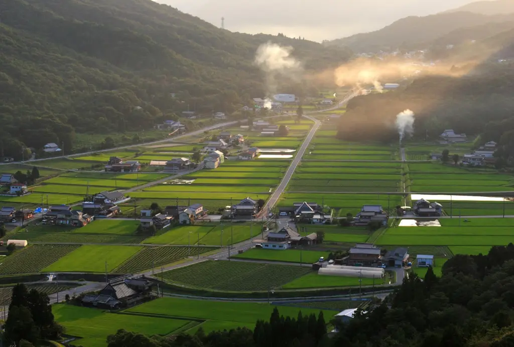

丹波の萩に猪
風景：丹波篠山の山裾に咲き乱れる野萩と野生の猪。
解説：花札の定番「猪鹿蝶」の猪を、名物「ぼたん鍋」で知られる丹波地方の象徴として描写。兵庫の豊かな山の幸と力強さを表現します。
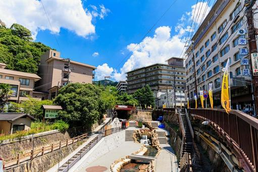
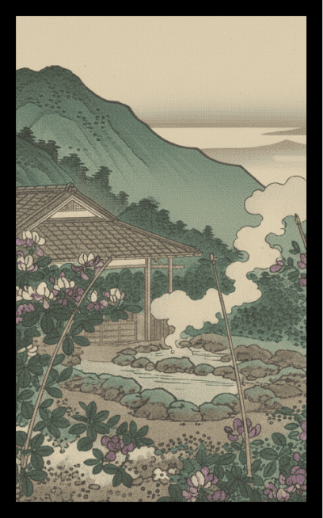
有馬温泉の萩に短冊
風景：日本最古の温泉・有馬の湯本坂や六甲川沿いに揺れる萩。
解説：鉄分を含んだ褐色の「金泉」をイメージした背景に、風情ある温泉街の萩を重ね、和歌に詠まれるような歴史的情緒を演出します。
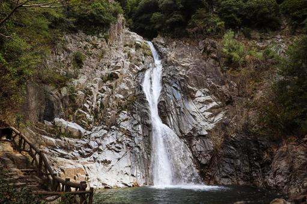
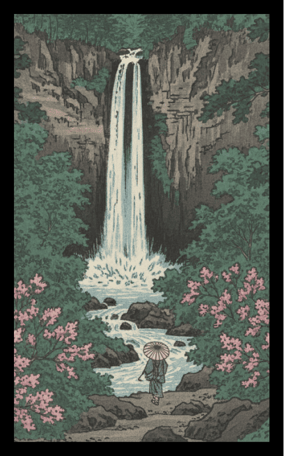
神戸布引の滝と萩
風景：日本三大神滝の一つ「布引の滝」の白い飛沫と、岩肌に自生する萩。
解説：神戸という都市のすぐ背後に峻烈な自然が広がる兵庫特有の地形を表現。水の白と萩の紫のコントラストが特徴です。
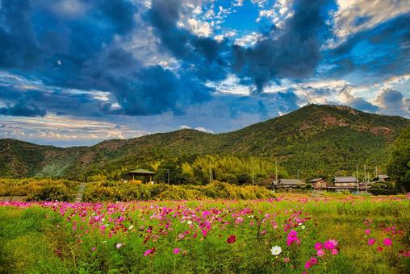
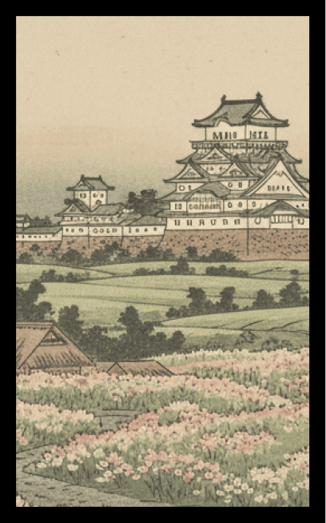
播磨平野の萩
風景：広大な播州平野の野道にどこまでも続く萩の茂み。
解説：山地だけでなく、穏やかな平野部も併せ持つ兵庫の奥行きを表現。夕暮れ時のシルエットとして描きます。
7月
絵札を押すと
詳細が見れるぞ
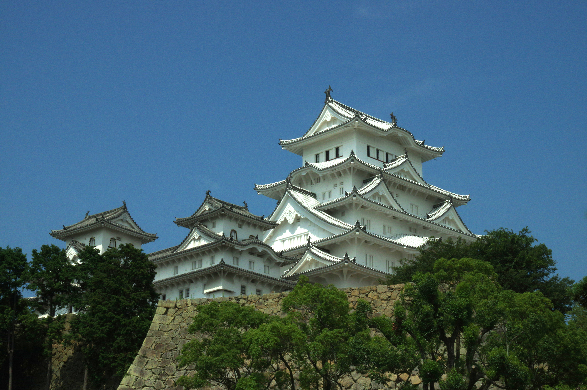

姫路城に鳳凰
風景：雪化粧をした世界遺産・姫路城の大天守と、空を舞う神々しい鳳凰。
解説：別名「白鷺城」の美しさを、桐札の象徴である「鳳凰」に見立てた、関西版花札のフィナーレを飾る最も豪華な一枚です。
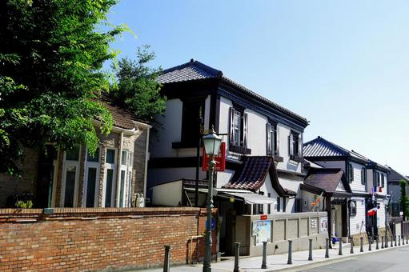
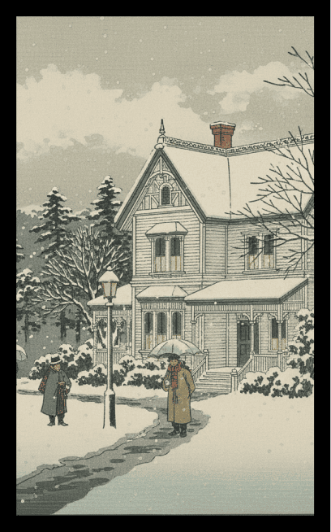
異人館の冬
風景：神戸・北野異人館街のレンガ造りの洋館と、冬の澄んだ空気。
解説：和の桐札の中に「洋」の風景を織り交ぜることで、港町・神戸を擁する兵庫らしさとハイカラな文化を表現します。
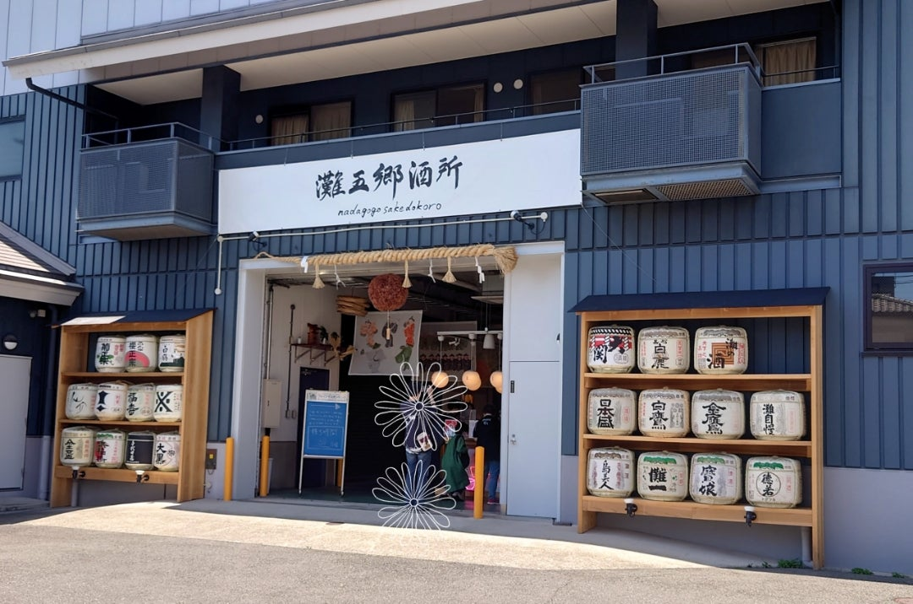
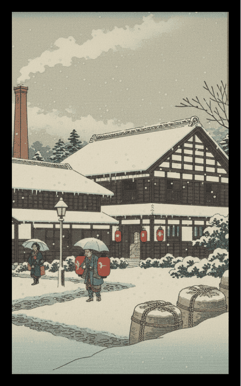
灘五郷の酒蔵の冬
風景：日本一の酒どころ・灘の酒蔵。軒先の新しい杉玉と立ち上る蒸気。
解説：12月は新酒の季節。兵庫が誇る伝統産業と、職人の技への敬意を込めた冬の情景です。
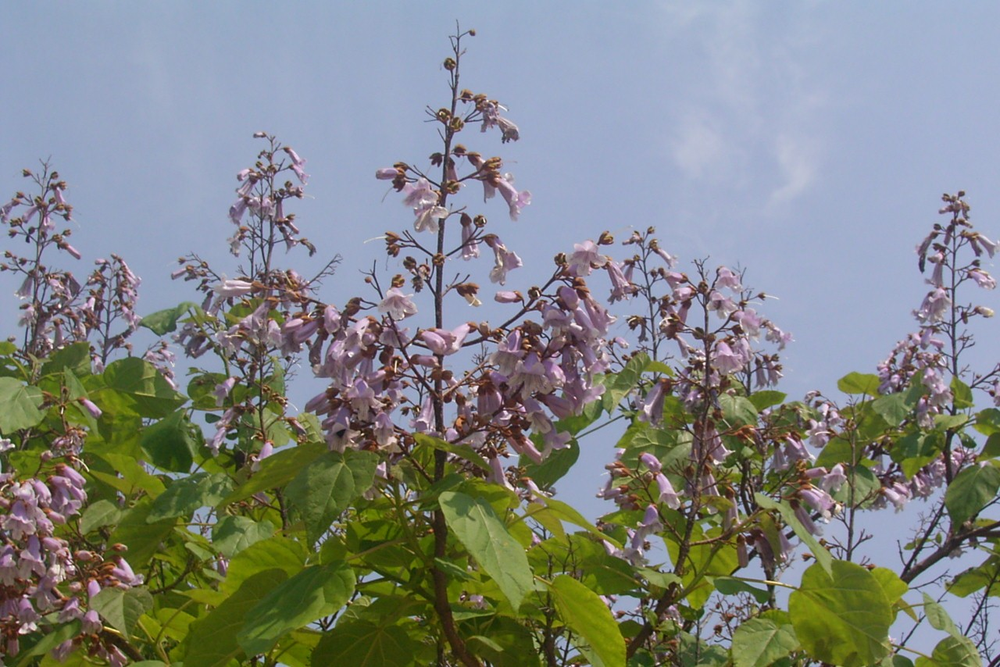
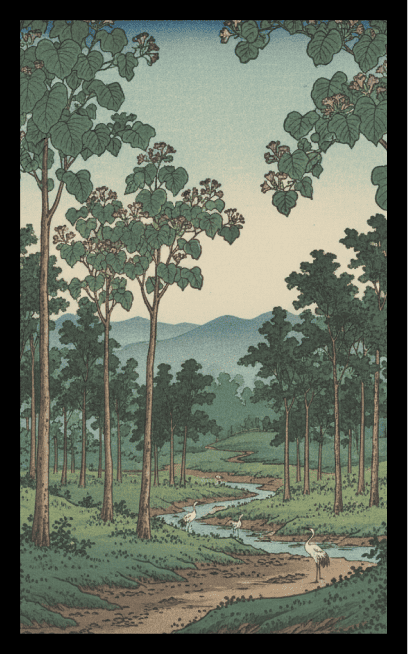
播磨の桐林
風景：冬の寒空の下、静かに佇む播磨地方の桐の木。
解説：伝統的な桐の意匠をストレートに表現しつつ、光札の華やかさを引き立てる静寂を表現します。
12月
絵札を押すと
詳細が見れるぞ